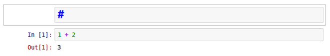

20180604 使用 Jupyter notebook
原文链接： http://codingpy.com/article/getting-started-with-jupyter-notebook-part-1/
jupyter notebook 是一款基于网页的交互式笔记本；
本文作者为 Marin Gilles，他是来自法国的一位物理学博士生，用 Python 开发了自己的物理学模拟框架。本文分为两部分，是 Python 翻译组成立后的第一篇译文，译者 EarlGrey。
Jupyter Notebook（此前被称为 IPython notebook）是一个交互式笔记本，支持运行 40 多种编程语言。在本文中，我们将介绍 Jupyter notebook 的主要特性，以及为什么对于希望编写漂亮的交互式文档的人来说是一个强大工具。
在开始使用 notebook 之前，我们先需要安装该库。你可以在 Jupyter 官网上找到完整的步骤。
译者注：其实只要
pip install jupyter就可以了
jupyter notebook
运行上面的命令之后，你将看到类似下面这样的输出：
[22:39@cookie ~/Desktop/xiaoxiyouran/packages #7]$ jupyter notebook
[I 22:54:27.351 NotebookApp] Serving notebooks from local directory: /Users/cookie/Desktop/xiaoxiyouran/packages
[I 22:54:27.351 NotebookApp] 0 active kernels
[I 22:54:27.351 NotebookApp] The Jupyter Notebook is running at: http://localhost:8888/?token=ae7896a9ff55d7aaea20a1bfc141673cd896a4bb8fea2ced
[I 22:54:27.351 NotebookApp] Use Control-C to stop this server and shut down all kernels (twice to skip confirmation).
[C 22:54:27.352 NotebookApp]
Copy/paste this URL into your browser when you connect for the first time,
to login with a token:
http://localhost:8888/?token=ae7896a9ff55d7aaea20a1bfc141673cd896a4bb8fea2ced
[I 22:54:29.332 NotebookApp] Accepting one-time-token-authenticated connection from ::1
[W 22:54:29.602 NotebookApp] 404 GET /apple-touch-icon-precomposed.png (::1) 11.73ms referer=None
同时，会在你开启 notebook 的文件夹中启动 Jupyter 主界面，如下所示：

如果想新建一个 notebook，只需要点击New，选择你希望启动的 notebook 类型即可。
这里，因为我只有一个 Python 内核【new 下面的python内核】，所以我们运行一个 Python notebook。在新打开的标签页中，我们会看到 notebook 界面，目前里面什么也没有。
notebook 界面由以下部分组成：
- notebook 的名称
- 主工具栏，提供了保存、导出、重载 notebook，以及重启内核等选项
- 快捷键
- notebook 主要区域，包含了 notebook 的内容编辑区
慢慢熟悉这些菜单和选项。如果想要详细了解有关 notebook 或一些库的具体话题，可以使用菜单栏右侧的帮助菜单。
下方的主要区域，由被称为单元格的部分组成。每个 notebook 由多个单元格构成，而每个单元格又可以有不同的用途。
下方截图中看到的是一个代码单元格（code cell），以[ ]开头。在这种类型的单元格中，可以输入任意代码并执行。例如，输入1 + 2并按下Shift + Enter。之后，单元格中的代码就会被计算，光标也会被移动动一个新的单元格中。你会得到如下结果：

根据绿色边框线，我们可以轻松地识别出当前工作的单元格。接下来，我们在第二个单元格中输入些其他代码，例如：
for i in range(5):
print(i)
对上面的代码求值时，你会得到：

和前一个示例一样，代码被计算之后，马上就会显示结果。你应该注意到了，这次没有出现类似Out[2]这样的文字。这是因为我们将结果打印出来了，没有返回任何的值。 【有 out[*] 的表示有返回值】
notebook 有一个非常有趣的特性，就是可以修改之前的单元格，对其重新计算，这样就可以更新整个文档了。试着把光标移回第一个单元格，并将1 + 2修改成2 + 3，然后按下Shift + Enter重新计算该单元格。你会发现结果马上就更新成了 5。如果你不想重新运行整个脚本，只想用不同的参数测试某个程式的话，这个特性显得尤其强大。不过，你也可以重新计算整个 notebook，只要点击Cell -> Run all即可。
现在我们已经知道了如何输入代码，为什么不尝试着让这个 notebook 更加漂亮、内容更丰富？为此，我们需要使用其他类型的单元格，即 Header单元格和 Markdown单元格。
首先，我们在顶部添加一个 notebook 的标题。选中第一个单元格，然后点击Insert -> Insert单元格above（在上方插入单元格）。你会发现，文档的顶部马上就出现了一个新的单元格。点击在快捷键栏中的单元格类型，将其变成一个标题单元格（heading cell）：
选中下拉选项中的 Heading。然后会出现一个弹出消息，告诉你如何创建不同层级的标题，这样你就有了一个不同类型的 cell：

这个单元格以#标记开头，意味着这是一个一级标题。如果需要子标题，可以使用以下标记表示（改变单元格类型时弹出消息中有解释）：
# : 一级标题
## : 二级标题
### : 三级标题
...
在#之后写下文档的标题，然后计算该单元格 [同样按 Shift + Enter 计算]。你会发现一个样式非常好看的标题。作为示例和练习，我还添加了其他几个标题单元格：

添加好标题之后，我们在编写一些解释，介绍每个代码单元格中的情况。为此，我们要在相应的地方插入单元格，然后将其类型变成 Markdown。然后，计算新的单元格。就这样，你的解释文本就漂亮地渲染出来了！

最后，你可以重命名该 notebook，点击Fiel -> Rename，然后输入新的名称。这样，新的名称将会出现在窗口的左上角，在 Jupyter 的标志旁边。
在下一篇中，我们将更深入地了解 notebook 的能力，以及如何继承其他 Python 库。